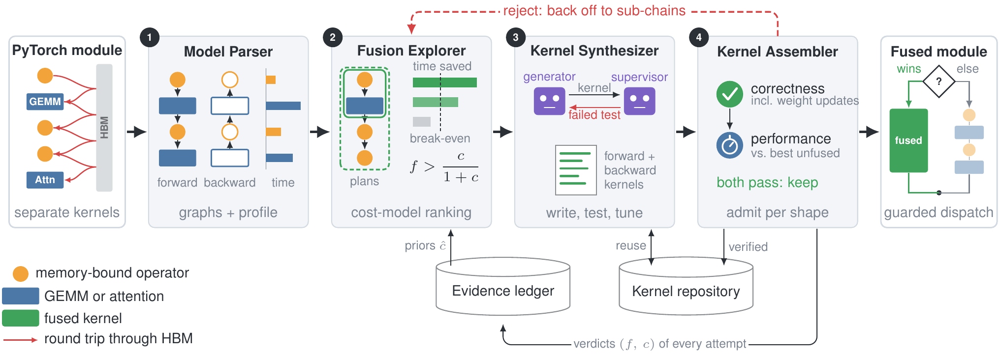
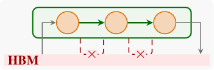

torch.compile, in the 44 of 47 valid configurations that pass both gatesFused kernels that are kept only where they pay
A compiled transformer alternates compute-bound kernels (GEMMs, attention) with memory-bound ones (normalization, activation, residual addition, rotary embedding). Each memory-bound kernel reads a tensor that the previous kernel just wrote to memory. Fusing it into its neighbor removes that round trip, but the merged work can also slow the neighbor down, and the fused kernel has to beat mature vendor libraries.
KernelFuser treats every fused kernel as a candidate. It plans fusions on the joint forward and backward graph, has LLM agents write the kernels in Triton, TLX or Helion, and admits a kernel shape by shape, after measuring it.

torch.compile and under KernelFuser (top), and the four stages of the system (bottom). The evidence ledger and the kernel repository carry measurements and verified kernels from one run to the next.Fuse into the anchor
Memory-bound operators move into the prologue or epilogue of the GEMM or attention kernel beside them, or into a chain of GEMMs, so the intermediate tile never leaves registers and shared memory.
Two gates and a shape guard
A candidate must reproduce outputs, gradients and parameter updates within tolerances fixed in advance, and must beat the fastest unfused implementation by more than the run-to-run noise. It is then called only at the shapes where it won.
A cost model for the verdict
The share of time a fusion removes comes from a profile of the unfused model; the overhead it adds to the anchor carries over from other architectures. Together they predict the gate's verdict before a kernel is written.
Where fusion pays on open-weight models
All numbers on this page are generated from the measurement receipts, and every measured row is in the repository. A configuration counts as kept only if it passes the correctness gate and wins by more than 1% in an initial measurement and in a retest.
Whole-model decode step
One new token per sequence over a key/value cache. Each layer runs five fused kernels: Q/K/V projection with per-head normalization and RoPE, attention over the cache, and three GEMMs that carry the residual additions and the activation.
torch.compile (faster of default and max-autotune)fusion alone: over the same kernels without fusionEach mark spans the range over five shapes (1 to 16 sequences, 256 or 1,024 cached tokens) on one A800, PyTorch 2.5.1. The gain from fusion shrinks as the model widens and the GEMMs take a larger share of the step.
Q/K normalization and RoPE inside attention
Speedup of the fused attention kernel over the best of three unfused implementations: the same attention kernel after separate kernels, torch.compile, and eager PyTorch with SDPA. Geometric mean over models and masking modes.
Why long sequences are hard
The fusion keeps beating its own anchor as sequences grow. What falls behind is the anchor: at long sequences torch.compile's attention path outruns our Triton attention kernel, and no fusion can win back that gap.
torch.compile (what the anchor costs)Normalization-only census, Qwen3-8B on H200 and nine models on A800. Above 1.0× is faster.
Training steps on WikiText-2
Whole-model training step in which the loss and its backward pass run as one fused kernel, 100 timed steps per arm, paired step by step with eager PyTorch and with torch.compile.
torch.compileover eager PyTorchA row is kept if its gradients stay as close to an FP32 reference as the two PyTorch implementations do, its loss trajectory and held-out perplexity stay within their spread, and it wins by more than 1% against both. The gain is confined to small models, where the head and the loss take a visible share of the step.
Where the gates say no
A system that reports only its wins is hard to trust. These fusions are correct and were measured the same way; the performance gate falls back to the unfused path.
| Fusion | Where | Fused ÷ best unfused | Why |
|---|---|---|---|
| Fused attention in whole-model prefill | H200, four Qwen3 models, three PyTorch versions | 0.98–1.02× (2 of 24 kept) | Attention is a small share of prefill |
| Loss folded into the LM-head GEMM epilogue | A800, fifteen heads | 0.68–0.84× (0 of 30) | The Triton GEMM trails cuBLAS at this size |
| Fused loss in whole training steps, rows that are not kept | A800, WikiText-2 | 0.99–1.01× vs compiled (rows) | Outside small models with large vocabularies, the loss is a small share of the step |
| SwiGLU into the projection epilogue | H200 | 0.78–0.93× (0 of 6) | cuBLAS followed by the activation is faster |
| Normalization into the projection prologue | H200 | 0.57–0.87× (0 of 4) | Each thread block repeats the reduction |
| Staged normalization into MoE expert GEMMs | H100, H200 | 0.19–0.96× (0 of 72) | Repeated normalization per expert tile |
Four fusion types, four stages, one rule for keeping a kernel



Model Parser
Captures the forward and backward graphs of a PyTorch module and profiles the unfused model, so every candidate is priced in measured time.
Fusion Explorer
Enumerates fusions around each anchor, largest plan first, and ranks them by the share of profiled time they can remove.
Kernel Synthesizer
A generator agent writes forward and backward kernels; a supervisor agent tests, profiles and tunes them, and backs off to smaller plans when a fusion costs more than it saves.
Kernel Assembler
Runs the correctness gate and the performance gate, then installs the kernel behind shape guards. Every other shape runs the original path.
What a fusion saves and what it costs
Let t_B be the unfused time, t_G the time of the anchor alone and t_F the fused time. The saved fraction is f = (t_B − t_G) / t_B and the fusion overhead is c = t_F / t_G − 1.
fuse when f > c / (1 + c)
Both numbers move with the input shape and the GPU, which is why a kernel is admitted per shape. A fusion can also gain at most the headroom of its anchor: built on an anchor that is slower than the vendor kernel, it loses even when it removes all of the memory traffic. The long-sequence chart above is that case.
Timing uses one harness for every arm: CUDA-graph replays, arms interleaved in random order within one process, exclusive use of the GPU, and a self-comparison of the unfused path to set the noise floor.
Run a measurement
The runners need Linux, an NVIDIA GPU, PyTorch and Triton, and a local copy of the checkpoint. Each one writes a JSON receipt with the correctness numbers, every timing arm and the verdict.
# whole-model decode step: eager, torch.compile (default and max-autotune), unfused kernels, fused kernels
python experiments/whole_model/e2e_decode2.py --model-dir $MODELS/Qwen3-0.6B --autotune \
--data wikitext2_train.txt --output out/decode_qwen3_0.6b.json
# training step with the fused loss on WikiText-2, with retest, self-comparison and held-out perplexity
python experiments/whole_model/train_step_ce.py --model-dir $MODELS/Qwen3-0.6B --shapes 8x512 \
--steps 100 --warmup 10 --data wikitext2_train.txt --retest --aa --compile --lean \
--output out/train_qwen3_0.6b.json
# attention census with the optimized fused kernel
python experiments/whole_model/recensus_driver.py --mode rope --models Qwen3-8B \
--sizes 128,256,384,512 --batches 1,8,32 --causal-modes false,true --bn 128 \
--output out/census_qwen3_8b.json
# tables and the data behind this page
node experiments/whole_model/analysis/build_public_data.js out_a800 out_h200 out_h100 docs/assetsCite the project
@misc{kernelfuser,
title = {KernelFuser: Automating Kernel Fusion with LLM Agents},
author = {The KernelFuser Authors},
year = {2026},
note = {https://github.com/WenbinWang12/KernelFuser}
}